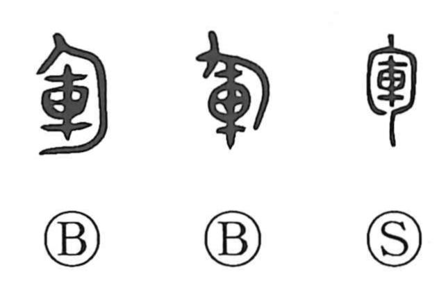

軍

Kun: ikusa | On: gun
army ・ war
Explanation
In its earliest forms, 軍 depicts a fluttering banner mounted on a chariot. The commander’s carriage bore this flag, and, as described by the verb hui (“to wield”), the general waved it to direct the movements of the entire force. At those signals the army’s chariots wheeled and advanced in unison; early sources even note specific colors, such as raising a blue flag to warn the rear that a river lay ahead. From this image of the command chariot with its signaling banner, the character came to mean the army itself and, by extension, warfare.